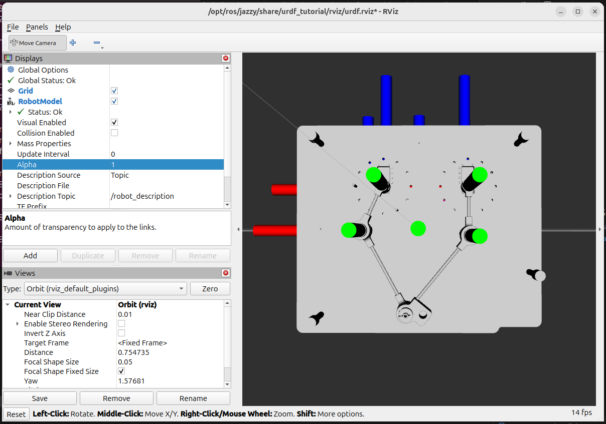
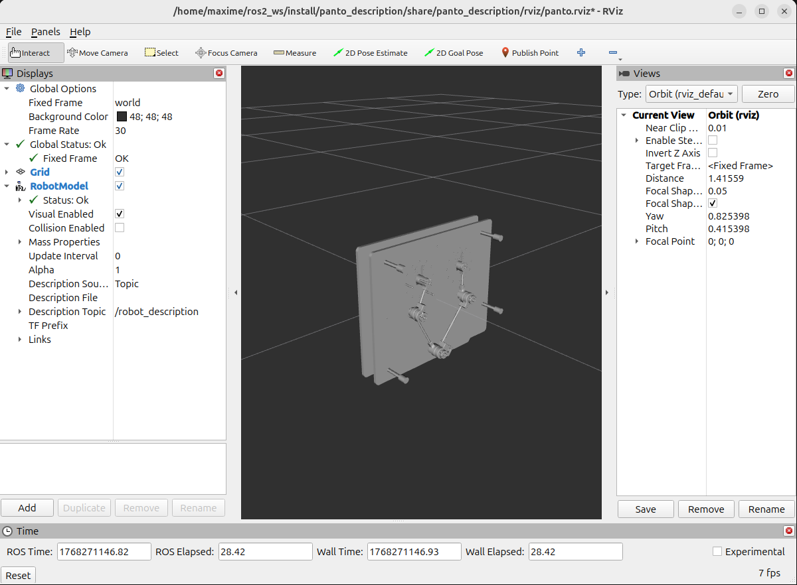

Génération de la description URDF du pantographe
Nous allons utiliser le modèle 3D au format step conçu et réalisé par M. Olivier PICCIN pour générer la description URDF du pantographe.

Il s’agit d’un assemblage comportant 5 pièces principales :
BATI_ASM: le bâti de la strucuture du pantographe avec les 2 moteurs pas à pas. Dans l’URDF nous allons le nommer
base.LINK1_ASM: le bras gauche du pantographe. Dans l’URDF nous allons le nommer
link1.LINK2_ASM: l’avant bras gauche du pantographe. Dans l’URDF nous allons le nommer
link2.LINK3_ASM: l’avant bras droit du pantographe. Dans l’URDF nous allons le nommer
link3.LINK4_ASM: le bras droit du pantographe. Dans l’URDF nous allons le nommer
link4.
Du point de vue URDF, nous aurons aussi besoin de définir l’outil de travail: le crayon et donc de le référencer par rapport à son support qui se trouve être sur l’avant bras gauche du pentographe (link2).
Dans un fichier URDF, les modèles 3D sont utilisés à partir de fichiers collada (extension .dae). Il va donc falloir convertir notre modèle 3D au format step en un ensemble de 5 modèles 3D au format collada.
Extraction des modèles 3D en step
Pour extraire les modèles 3D au format step, vous pouvez utiliser le logiciel freecad.
Conversion des modèles 3D en collada
Pour convertir les modèles 3D en collada (dae), vous pouvez utiliser le logiciel freecad.
Création du package
Tout d’abord créer le package du pantographe.
ros2 pkg create panto_description --build-type ament_cmake
on devrait obtenir une arborescence de ce type
panto_description/
|__CMakeLists.txt
|__package.xml
|__src/
Création des dossiers standards
Créer les dossiers standards launch, meshes et urdf
cd panto_description
mkdir urdf meshes launch ros2_control config rviz gazebo
Vous devriez obtenir l’arborescence suivante
panto_description/
|__CMakeLists.txt
|__package.xml
|__src/
|__launch/
|__urdf/
|__meshes/
|__ros2_control/
|__config/
|__rviz/
|__gazebo/
Copier les fichiers collada dans le répertoire panto_description/meshes/
Ouvrir le fichier CMakeLists.txt et remplacer par
cmake_minimum_required(VERSION 3.8)
project(panto_description)
find_package(ament_cmake REQUIRED)
install(
DIRECTORY urdf meshes launch ros2_control config rviz gazebo
DESTINATION share/${PROJECT_NAME}
)
ament_package()
Modifier le fichier package.xml pour qu’il devienne
<?xml version="1.0"?>
<?xml-model href="http://download.ros.org/schema/package_format3.xsd" schematypens="http://www.w3.org/2001/XMLSchema"?>
<package format="3">
<name>panto_description</name>
<version>0.0.0</version>
<description>TODO: Package description</description>
<maintainer email="maxime@todo.todo">maxime</maintainer>
<license>TODO: License declaration</license>
<buildtool_depend>ament_cmake</buildtool_depend>
<exec_depend>robot_state_publisher</exec_depend>
<exec_depend>joint_state_publisher_gui</exec_depend>
<exec_depend>rviz2</exec_depend>
<test_depend>ament_lint_auto</test_depend>
<test_depend>ament_lint_common</test_depend>
<export>
<build_type>ament_cmake</build_type>
</export>
</package>
On va ensuite installer un package permettant la visualisation rapide du fichier urdf pour aider à sa construction.
Déplacez-vous à la racine de la machine
cd ~
Installer le package ros-$ROS_DISTRO-urdf-tutorial
Note
Si la commande précédente ne fonctionne pas remplacer $ROS_DISTRO par votre distribution (Humble, Jazzy, …)
Sourcer la distribution ros
source /opt/ros/$ROS_DISTRIB/setup.bash
Création du fichier URDF
Créer un fichier urdf dans le répertoire panto_description/urdf
cd urdf
touch panto.urdf
Le fichier urdf va se structurer de la manière suivante Un en-tête
<?xml version="1.0"?>
<robot name="panto" xmlns:xacro="http://www.ros.org/wiki/xacro">
Note
Pour modifier le nom du robot modifier la variable robot name (ligne 2)
Un link fixe qui servira de référentiel.
<link name="world"/>
De links qui seront les parts de votre système
<link name="base_link">
<visual>
<geometry>
<mesh filename="package://panto_description/meshes/base.dae" scale="1 1 1"/>
</geometry>
<origin xyz="0 0 0" rpy="0 0 0" />
</visual>
</link>
Note
Dans un fichier URDF les modèles 3D sont référencés par des balises <mesh>. Le filename sera le chemin relatif au package et non relatif à la position du fichier urdf
De joints qui vont lier les links entre eux. Il existe différents types de joints
<joint name="base2world" type="fixed">
<parent link="world"/>
<child link="base_link"/>
</joint>
Note
Un fichier urdf n’admet pas de boucle cinématique. Il faut alors créer 2 branches ouvertes que nous lieront par contrainte géométrique plus tard.
Copier le code urdf suivant dans le fichier panto.urdf
<?xml version="1.0"?>
<robot name="panto" xmlns:xacro="http://www.ros.org/wiki/xacro">
<!-- Link pour fixer la base -->
<link name="world"/>
<link name="base_link">
<visual>
<geometry>
<mesh filename="package://panto_description/meshes/base.dae" scale="1 1 1"/>
</geometry>
<origin xyz="0 0 0" rpy="0 0 0" />
</visual>
</link>
<joint name="base2world" type="fixed">
<parent link="world"/>
<child link="base_link"/>
</joint>
<link name="link1">
<visual>
<geometry>
<mesh filename="package://panto_description/meshes/link1.dae" scale="1 1 1"/>
</geometry>
<origin xyz="0.08 0 -0.07" rpy="0 0 0" />
</visual>
</link>
<joint name="base_link_link1_joint" type="revolute">
<parent link="base_link"/>
<child link="link1"/>
<origin xyz="-0.08 0 0.07" rpy="0 0 0"/>
<axis xyz="0 1 0"/>
<limit effort="10" lower="-1.57" upper="1.57" velocity="1.0"/>
</joint>
<link name="link2">
<visual>
<geometry>
<mesh filename="package://panto_description/meshes/link2.dae" scale="1 1 1"/>
</geometry>
<origin xyz="0.08 0 0.01" rpy="0 0 0" />
</visual>
</link>
<joint name="link1_link2_joint" type="revolute">
<parent link="link1"/>
<child link="link2"/>
<origin xyz="0 0 -0.08" rpy="0 0 0"/>
<axis xyz="0 1 0"/>
<limit effort="10" lower="-1.57" upper="1.57" velocity="1.0"/>
</joint>
<link name="link4">
<visual>
<geometry>
<mesh filename="package://panto_description/meshes/link4.dae" scale="1 1 1"/>
</geometry>
<origin xyz="-0.058 0 -0.07" rpy="0 0 0" />
</visual>
</link>
<joint name="base_link_link4_joint" type="revolute">
<parent link="base_link"/>
<child link="link4"/>
<origin xyz="0.058 0 0.070" rpy="0 0 0"/>
<axis xyz="0 1 0"/>
<limit effort="10" lower="-1.57" upper="1.57" velocity="1.0"/>
</joint>
<link name="link3">
<visual>
<geometry>
<mesh filename="package://panto_description/meshes/link3.dae" scale="1 1 1"/>
</geometry>
<origin xyz="-0.0902347 0 0.00212437" rpy="0 0 0" />
</visual>
</link>
<joint name="link4_link3_joint" type="revolute">
<parent link="link4"/>
<child link="link3"/>
<origin xyz="0.0322347 0 -0.07212437" rpy="0 0 0"/>
<axis xyz="0 1 0"/>
<limit effort="10" lower="-1.57" upper="1.57" velocity="1.0"/>
</joint>
</robot>
Affichage de l’URDF dans RViz
Déplacez-vous dans le répertoire contenant le fichier urdf
cd panto_description/urdf/
Obtener le chemin absolu de ce répertoire en entrant la commande :
Lancer l’affichage de l’URDF en entrant la commande :
ros2 launch urdf_tutorial display.launch.py model:=/<chemin absolu>/panto.urdf
Vous devez obtenir ceci :

Note
N’hésitez pas à lancer régulièrement l’affichage de l’urdf durant sa construction afin de bien configurer les joints entre les links
Création fichier launch
Déplacez-vous dans launch
cd panto_description/launch
Créer un fichier display.launch.xml
touch display.launch.xml
Modifier le fichier display.launch.xml pour qu’il soit
<launch>
<let name="urdf_path" value="$(find-pkg-share panto_description)/urdf/panto.urdf"/>
<let name="rviz_config_path" value="$(find-pkg-share panto_description)/rviz/panto.rviz"/>
<node pkg="robot_state_publisher" exec="robot_state_publisher">
<param name="robot_description" value="$(command 'xacro $(var urdf_path)')"/>
</node>
<node pkg="joint_state_publisher_gui" exec="joint_state_publisher_gui"/>
<node pkg="rviz2" exec="rviz2" output="screen" args="-d $(var rviz_config_path)"/>
</launch>
Compiler et sourcer le package dans votre workspace
colcon build
source install/setup.bash
Pour lancer le fichier launch utiliser la commande
ros2 launch panto_description display.launch.xml
Création fichier ros2_control
Le fichier ros2_control sert d’interfaçage hardware/software. Afin de le créer placer vous dans le répertoire ros2_control
cd panto_description/ros2_control
Créer un fichier panto.ros2_control.urdf
touch panto.ros2_control.urdf
Copier le code suivant dans le fichier panto.ros2_control.urdf
<?xml version="1.0"?>
<robot name = "panto" xmlns:xacro="http://www.ros.org/wiki/xacro">
<ros2_control name="panto" type="system">
<hardware>
<plugin>mock_components/GenericSystem</plugin>
</hardware>
<joint name="base_link_link1_joint">
<command_interface name="position"/>
<state_interface name="position"/>
</joint>
<joint name="base_link_link4_joint">
<command_interface name="position"/>
<state_interface name="position"/>
</joint>
<joint name="link1_link2_joint">
<command_interface name="position"/>
<state_interface name="position"/>
</joint>
<joint name="link4_link3_joint">
<command_interface name="position"/>
<state_interface name="position"/>
</joint>
</ros2_control>
</robot>
Création d’un fichier Xacro combinant la description urdf et la description ros2_control
Déplacez-vous dans le répertoire config
cd ros2_ws/src/panto_description/config
Creer un fichier xacro
touch panto.config.xacro
Copier coller ce code à l’intérieur de panto.config.xacro
<?xml version="1.0"?>
<!-- Pantographe -->
<robot xmlns:xacro="http://www.ros.org/wiki/xacro" name="panto">
<!-- Import panto urdf file -->
<xacro:include filename="$(find panto_description)/urdf/panto.urdf" />
<!-- Import panto ros2_control description -->
<xacro:include filename="$(find panto_description)/ros2_control/panto.ros2_control.urdf" />
</robot>
Ce fichier xacro permet de réunir la description urdf et ros2_control au sein d’un même fichier.
Création d’une configuration ros2_control
Déplacez-vous dans le répertoire config
cd ros2_ws/src/panto_description/config
Créer un fichier panto_controllers.yaml
touch panto_controllers.yaml
Ce fichier permettra d’associer à chaque liaison un controller spécifique de ros2_control. Ici, nous allons utiliser deux controller généralement utilisés qui sont joint_state_broadcaster et forward_command_controller. Le premier sert à obtenir la position, la vitesse et l’effort dans chaque liaison. Le deuxième est un controller de position d’une liaison.
Voici le code à écrire dans ce fichier dans le cas du pantographe.
controller_manager:
ros__parameters:
update_rate: 100 # Hz
joint_state_broadcaster:
type: joint_state_broadcaster/JointStateBroadcaster
panto_position_controller:
type: forward_command_controller/ForwardCommandController
panto_position_controller:
ros__parameters:
interface_name: position
joints:
- base_link_link1_joint
- link1_link2_joint
- base_link_link4_joint
- link4_link3_joint
Création d’un fichier launch pour ros2_control
Tout d’abord créer un fichier de configuration de rviz.
Déplacez-vous dans le répertoire rviz.
cd panto_description/rviz
Créer un fichier panto.rviz
touch panto.rviz
Copier collé ce code à l’intérieur. Il permet de configurer la vue dans rviz et de déclarer les links qui seront présents.
Panels:
- Class: rviz_common/Displays
Help Height: 78
Name: Displays
Property Tree Widget:
Expanded:
- /Global Options1
- /Status1
- /RobotModel1
Splitter Ratio: 0.5
Tree Height: 549
- Class: rviz_common/Selection
Name: Selection
- Class: rviz_common/Tool Properties
Expanded:
- /2D Goal Pose1
- /Publish Point1
Name: Tool Properties
Splitter Ratio: 0.5886790156364441
- Class: rviz_common/Views
Expanded:
- /Current View1
Name: Views
Splitter Ratio: 0.5
- Class: rviz_common/Time
Experimental: false
Name: Time
SyncMode: 0
SyncSource: ""
Visualization Manager:
Class: ""
Displays:
- Alpha: 0.5
Cell Size: 1
Class: rviz_default_plugins/Grid
Color: 160; 160; 164
Enabled: true
Line Style:
Line Width: 0.029999999329447746
Value: Lines
Name: Grid
Normal Cell Count: 0
Offset:
X: 0
Y: 0
Z: 0
Plane: XY
Plane Cell Count: 10
Reference Frame: <Fixed Frame>
Value: true
- Alpha: 1
Class: rviz_default_plugins/RobotModel
Collision Enabled: false
Description File: ""
Description Source: Topic
Description Topic:
Depth: 5
Durability Policy: Volatile
History Policy: Keep Last
Reliability Policy: Reliable
Value: /robot_description
Enabled: true
Links:
All Links Enabled: true
Expand Joint Details: false
Expand Link Details: false
Expand Tree: false
Link Tree Style: Links in Alphabetic Order
base_link:
Alpha: 1
Show Axes: false
Show Trail: false
Value: true
link1:
Alpha: 1
Show Axes: false
Show Trail: false
Value: true
link2:
Alpha: 1
Show Axes: false
Show Trail: false
Value: true
link3:
Alpha: 1
Show Axes: false
Show Trail: false
Value: true
link4:
Alpha: 1
Show Axes: false
Show Trail: false
Value: true
world:
Alpha: 1
Show Axes: false
Show Trail: false
Mass Properties:
Inertia: false
Mass: false
Name: RobotModel
TF Prefix: ""
Update Interval: 0
Value: true
Visual Enabled: true
Enabled: true
Global Options:
Background Color: 48; 48; 48
Fixed Frame: world
Frame Rate: 30
Name: root
Tools:
- Class: rviz_default_plugins/Interact
Hide Inactive Objects: true
- Class: rviz_default_plugins/MoveCamera
- Class: rviz_default_plugins/Select
- Class: rviz_default_plugins/FocusCamera
- Class: rviz_default_plugins/Measure
Line color: 128; 128; 0
- Class: rviz_default_plugins/SetInitialPose
Covariance x: 0.25
Covariance y: 0.25
Covariance yaw: 0.06853891909122467
Topic:
Depth: 5
Durability Policy: Volatile
History Policy: Keep Last
Reliability Policy: Reliable
Value: /initialpose
- Class: rviz_default_plugins/SetGoal
Topic:
Depth: 5
Durability Policy: Volatile
History Policy: Keep Last
Reliability Policy: Reliable
Value: /goal_pose
- Class: rviz_default_plugins/PublishPoint
Single click: true
Topic:
Depth: 5
Durability Policy: Volatile
History Policy: Keep Last
Reliability Policy: Reliable
Value: /clicked_point
Transformation:
Current:
Class: rviz_default_plugins/TF
Value: true
Views:
Current:
Class: rviz_default_plugins/Orbit
Distance: 2.7850098609924316
Enable Stereo Rendering:
Stereo Eye Separation: 0.05999999865889549
Stereo Focal Distance: 1
Swap Stereo Eyes: false
Value: false
Focal Point:
X: 0
Y: 0
Z: 0
Focal Shape Fixed Size: true
Focal Shape Size: 0.05000000074505806
Invert Z Axis: false
Name: Current View
Near Clip Distance: 0.009999999776482582
Pitch: 0.41539815068244934
Target Frame: <Fixed Frame>
Value: Orbit (rviz)
Yaw: 0.825397789478302
Saved: ~
Window Geometry:
Displays:
collapsed: false
Height: 846
Hide Left Dock: false
Hide Right Dock: false
QMainWindow State: 000000ff00000000fd000000040000000000000156000002b0fc0200000008fb0000001200530065006c0065006300740069006f006e00000001e10000009b0000005c00fffffffb0000001e0054006f006f006c002000500072006f007000650072007400690065007302000001ed000001df00000185000000a3fb000000120056006900650077007300200054006f006f02000001df000002110000018500000122fb000000200054006f006f006c002000500072006f0070006500720074006900650073003203000002880000011d000002210000017afb000000100044006900730070006c006100790073010000003d000002b0000000c900fffffffb0000002000730065006c0065006300740069006f006e00200062007500660066006500720200000138000000aa0000023a00000294fb00000014005700690064006500530074006500720065006f02000000e6000000d2000003ee0000030bfb0000000c004b0069006e0065006300740200000186000001060000030c00000261000000010000010f000002b0fc0200000003fb0000001e0054006f006f006c002000500072006f00700065007200740069006500730100000041000000780000000000000000fb0000000a00560069006500770073010000003d000002b0000000a400fffffffb0000001200530065006c0065006300740069006f006e010000025a000000b200000000000000000000000200000490000000a9fc0100000001fb0000000a00560069006500770073030000004e00000080000002e10000019700000003000004b00000003efc0100000002fb0000000800540069006d00650100000000000004b0000002fb00fffffffb0000000800540069006d006501000000000000045000000000000000000000023f000002b000000004000000040000000800000008fc0000000100000002000000010000000a0054006f006f006c00730100000000ffffffff0000000000000000
Selection:
collapsed: false
Time:
collapsed: false
Tool Properties:
collapsed: false
Views:
collapsed: false
Width: 1200
X: 2082
Y: 117
Ensuite, nous allons créer un nouveau package nommé panto_bringup. Donc déplacer le répertoire src.
cd ros2_ws/src
Créer un package panto_bringup
ros2 pkg create panto_bringup --build-type ament_cmake
On devrait obtenir une arborescence de ce type
panto_bringup/
|__include/
|__CMakeLists.txt
|__package.xml
|__src/
Vous pouvez supprimez les répertoires include et src, et créer 2 nouveaux répertoire nommé config et launch
rm -r include src
mkdir config launch
Modifier le fichier CMakeLists.txt dans ce même package pour qu’il devienne :
cmake_minimum_required(VERSION 3.8)
project(panto_bringup)
if(CMAKE_COMPILER_IS_GNUCXX OR CMAKE_CXX_COMPILER_ID MATCHES "Clang")
add_compile_options(-Wall -Wextra -Wpedantic)
endif()
# find dependencies
find_package(ament_cmake REQUIRED)
install(
DIRECTORY config launch
DESTINATION share/${PROJECT_NAME}
)
ament_package()
Dans le répertoire launch, créer un fichier panto.launch.py
cd panto_bringup/launch
touch panto.launch.py
Copier coller le code suivant dans le fichier panto.launch.py. Il permettra de lancer successivement les différents noeuds nécessaire pour afficher le robot et importer les infertaces hardware.
from launch import LaunchDescription
from launch.actions import TimerAction
from launch.substitutions import Command, FindExecutable, PathJoinSubstitution
from launch_ros.actions import Node
from launch_ros.substitutions import FindPackageShare
def generate_launch_description():
# =======================
# Robot description (xacro)
# =======================
robot_description_content = Command(
[
PathJoinSubstitution([FindExecutable(name='xacro')]),
' ',
PathJoinSubstitution([
FindPackageShare('panto_description'),
'config',
'panto.config.xacro'
]),
]
)
robot_description = {'robot_description': robot_description_content}
# =======================
# Controllers config
# =======================
robot_controllers = PathJoinSubstitution([
FindPackageShare('panto_description'),
'config',
'panto_controllers.yaml'
])
# =======================
# RViz config
# =======================
rviz_config_file = PathJoinSubstitution([
FindPackageShare('panto_description'),
'rviz',
'panto.rviz'
])
# =======================
# Nodes
# =======================
# robot_state_publisher
robot_state_publisher_node = Node(
package='robot_state_publisher',
executable='robot_state_publisher',
output='screen',
parameters=[robot_description],
)
# ros2_control
ros2_control_node = Node(
package='controller_manager',
executable='ros2_control_node',
output='screen',
parameters=[robot_description, robot_controllers],
)
# RViz
rviz_node = Node(
package='rviz2',
executable='rviz2',
name='rviz2',
output='log',
arguments=['-d', rviz_config_file],
)
# Joint state broadcaster
joint_state_broadcaster_spawner = Node(
package='controller_manager',
executable='spawner',
arguments=['joint_state_broadcaster'],
output='screen',
)
# Position controller
position_controller_spawner = Node(
package='controller_manager',
executable='spawner',
arguments=['panto_position_controller'],
output='screen',
)
# =======================
# Launch order
# =======================
return LaunchDescription([
# 1. URDF → TF
robot_state_publisher_node,
# 2. ros2_control
ros2_control_node,
# 3. RViz
rviz_node,
# 4. Spawners (avec délais pour laisser ros2_control démarrer)
TimerAction(
period=3.0,
actions=[joint_state_broadcaster_spawner],
),
TimerAction(
period=5.0,
actions=[position_controller_spawner],
),
])
Build tous les packages
colcon build
Sourcer le terminal avec les nouveaux packages
source install/setup.bash
Lancer le pantographe avec les controller ros2_control
ros2 launch panto_bringup panto.launch.py
Nous obtenons normalement le lancement de rviz avec la maquette du pantographe avec les 8 interfaces et les 2 controllers de ros2_control.

Vous pouvez vérifier la présence des interfaces avec la commande :
ros2 control list_hardware_interfaces
Vous devez voir ceci :
command interfaces
base_link_link1_joint/position [available] [claimed]
base_link_link4_joint/position [available] [claimed]
link1_link2_joint/position [available] [claimed]
link4_link3_joint/position [available] [claimed]
state interfaces
base_link_link1_joint/position
base_link_link4_joint/position
link1_link2_joint/position
link4_link3_joint/position
Il y a donc 4 interfaces de commandes (coommand interfaces), et 4 interfaces de récupération de donnéesc(state interfaces).
Pour vérifier la présence des controllers, il faut entrer la commande suivante :
ros2 control list_controllers
Vous devez voir ceci :
panto_position_controller forward_command_controller/ForwardCommandController active
joint_state_broadcaster joint_state_broadcaster/JointStateBroadcaster active
panto_position_controller permet de contrôler la position angulaire des liaisons pivots. joint_state_broadcaster permet de récupérer la position et la vitesse et l’effort dans chaque liaison.
Maintenant, si vous entrez cette commande :
ros2 topic list
Vous devriez voir ceci :
/clicked_point
/controller_manager/activity
/controller_manager/introspection_data/full
/controller_manager/introspection_data/names
/controller_manager/introspection_data/values
/controller_manager/statistics/full
/controller_manager/statistics/names
/controller_manager/statistics/values
/diagnostics
/dynamic_joint_states
/goal_pose
/initialpose
/joint_state_broadcaster/transition_event
/joint_states
/panto_position_controller/commands
/panto_position_controller/transition_event
/parameter_events
/robot_description
/rosout
/tf
/tf_static
C’est la liste des topics actives. Celles qui nous intéresse est /panto_position_controller/commands. Maintenant, utiliser cette commande pour vérifier quel type de message accepte ce topic.
ros2 topic info /panto_position_controller/commands
Vous obtenez ceci :
Type: std_msgs/msg/Float64MultiArray
Publisher count: 0
Subscription count: 1
C’est le type de message qu’attend le topic. Maintenant, essayer de rentrer cette commande pour envoyer un message sur ce topic. Si tout se passe bien le pantographe est censé bouger.
ros2 topic pub --once /panto_position_controller/commands std_msgs/msg/Float64MultiArray "{data: [0.5,-1.5,0.3,0.5]}"
Création d’un noeud python de commande du pantographe
L’objectif est de créer un noeud python se présentant sous la forme de 4 sliders permettant de controller chacune une liaison pivot à travers le topic /panto_position_controller/commands.
Déplacez vous dans le répertoire src du votre workspace.
cd ros2_ws/src
Creer un package python avec rclpy et std_msgs en dépendances.
ros2 pkg create cmd_slider_pub --build-type ament_python --dependencies rclpy std_msgs
Nous obtenons l’arborescence suivante :
cmd_slider_pub/
├── package.xml
├── setup.py
├── setup.cfg
├── cmd_slider_pub/
│ ├── __init__.py
Créer le fichier du noeud
cd cmd_slider_pub/cmd_slider_pub
touch cmd_slider_pub.py
Ouvrez le fichier dans vscode.
code cmd_slider_pub.py
Copier coller ce code à l’intérieur :
#!/usr/bin/env python3
import rclpy
from rclpy.node import Node
from std_msgs.msg import Float64MultiArray
import tkinter as tk
class CmdSliderPub(Node):
def __init__(self):
super().__init__('cmd_slider_pub')
self.publisher_ = self.create_publisher(
Float64MultiArray,
'/panto_position_controller/commands',
10
)
self.joint_values = [0.0, 0.0, 0.0, 0.0]
self.timer = self.create_timer(0.1, self.publish_joint_positions)
self.init_gui()
def init_gui(self):
self.root = tk.Tk()
self.root.title("Panto Position Command Sliders")
for i in range(4):
tk.Label(self.root, text=f"Joint {i+1}").pack()
tk.Scale(
self.root,
from_=-3.14,
to=3.14,
resolution=0.01,
orient=tk.HORIZONTAL,
length=400,
command=lambda val, idx=i: self.update_joint(idx, val)
).pack()
self.root.protocol("WM_DELETE_WINDOW", self.on_close)
def update_joint(self, index, value):
self.joint_values[index] = float(value)
self.publish_joint_positions()
def publish_joint_positions(self):
msg = Float64MultiArray()
msg.data = self.joint_values
self.publisher_.publish(msg)
def on_close(self):
self.get_logger().info("Shutting down cmd_slider_pub")
self.root.destroy()
rclpy.shutdown()
def run(self):
while rclpy.ok():
self.root.update_idletasks()
self.root.update()
def main():
rclpy.init()
node = CmdSliderPub()
node.run()
if __name__ == '__main__':
main()
Modifier ensuite le fichier setup.py pour rajouter le nouveau fichier en tant qu’éxécutable du package.
entry_points={
'console_scripts': [
'cmd_slider_pub = cmd_slider_pub.cmd_slider_pub:main',
],
},
Vérifier que les dépendances rclpy et std_msgs sont bien présente dans le fichier package.xml. Vous devez voir ceci à l’intérieur du fichier :
<exec_depend>rclpy</exec_depend>
<exec_depend>std_msgs</exec_depend>
Rendez ensuite le fichier du noeud exécutable :
chmod +x cmd_slider_pub/cmd_slider_pub.py
Compiler le package
cd ~/ros2_ws
colcon build --packages-select cmd_slider_pub
Sourcer le workspace :
source install/setup.bash
Lancer le noeud :
ros2 run cmd_slider_pub cmd_slider_pub
Vérifier le noeud publie sur le topic /panto_position_controller/commands
ros2 launch panto_bringup panto.launch.py
ros2 topic echo /panto_position_controller/commands
Vous devez ainsi voir ceci :
Création d’un noeud python assurant 2 ddl pour les liaisons accrochées au bâti et 2 liaisons passives
L’objectif est de créer un noeud python ayant 2 liaison pivot en degré de liberté et les 2 autres liaisons pivot seront passives et seront piloté de manière à assurer la contrainte géométrique de fermeture des branches ouvertes du pantographe au sommet.
Déplacez vous dans le répertoire où se trouve le précédent noeud python cmd_slider_pub.py.
cd ros2_ws/src/cmd_slider_pub/cmd_slider_pub
Créer un nouveau fichier python.
touch cmd_ferm_geom.py
Ouvrez ce fichier avec vscode
code cmd_ferm_geom.py
Ce noeud nécessite le modèle géométrique inverse pour son bon fonctionnement. Malheureusement, nous n’avons pas eu le temps d’avoir un code satisfaisant pour ce noeud. Pour l’instant, nous pouvons proposer un noeud où les 2 liaisons pivots non reliées au bâti sont passives, c’est-à-dire qu’elles sont pilotées en fonction des commandes des 2 autres liaisons pivots. Pour l’instant, la relation de pilotage entre les liaisons actives et passives est fausse. Le code suivant permettra juste de démontrer que la mise en place de liaison passive et active est possible.
#!/usr/bin/env python3
import rclpy
from rclpy.node import Node
from std_msgs.msg import Float64MultiArray
import tkinter as tk
import math
class CmdFermGeom(Node):
def __init__(self):
super().__init__('cmd_ferm_geom')
self.publisher_ = self.create_publisher(
Float64MultiArray,
'/panto_position_controller/commands',
10
)
# Angles moteurs
self.theta1 = 0.0 # base_link_link1_joint
self.theta4 = 0.0 # base_link_link4_joint
self.init_gui()
self.timer = self.create_timer(0.05, self.publish_commands)
# =========================
# GUI
# =========================
def init_gui(self):
self.root = tk.Tk()
self.root.title("Pentographe – fermeture géométrique simplifiée")
tk.Label(self.root, text="θ1 (base → link1)").pack()
self.slider1 = tk.Scale(
self.root, from_=-1.57, to=1.57,
resolution=0.01, orient=tk.HORIZONTAL,
length=400, command=self.update_theta1
)
self.slider1.pack()
tk.Label(self.root, text="θ4 (base → link4)").pack()
self.slider4 = tk.Scale(
self.root, from_=-1.57, to=1.57,
resolution=0.01, orient=tk.HORIZONTAL,
length=400, command=self.update_theta4
)
self.slider4.pack()
self.root.protocol("WM_DELETE_WINDOW", self.on_close)
def update_theta1(self, value):
self.theta1 = float(value)
def update_theta4(self, value):
self.theta4 = float(value)
# =========================
# Fermeture simplifiée
# =========================
def compute_passive_joints(self):
theta2 = math.pi - self.theta1
theta3 = math.pi - self.theta4
return theta2, theta3
# =========================
# Publication
# =========================
def publish_commands(self):
theta2, theta3 = self.compute_passive_joints()
msg = Float64MultiArray()
msg.data = [
self.theta1,
self.theta4,
theta2,
theta3
]
self.publisher_.publish(msg)
def on_close(self):
self.root.destroy()
rclpy.shutdown()
def run(self):
while rclpy.ok():
rclpy.spin_once(self, timeout_sec=0.0)
self.root.update_idletasks()
self.root.update()
def main():
rclpy.init()
node = CmdFermGeom()
node.run()
if __name__ == '__main__':
main()
N’oubliez de rajouter ce fichier dans les entry_points dans le fichier setup.py avant de compiler et sourcer.
entry_points={
'console_scripts': [
'cmd_slider_pub = cmd_slider_pub.cmd_slider_pub:main',
'cmd_ferm_geom = cmd_slider_pub.cmd_ferm_geom:main',
],
}